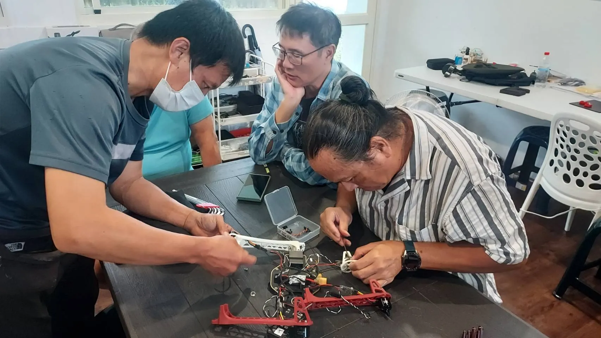

多機調度現在哪
單台機覆蓋面積有限，大型農場或專業飛防隊常同時出動多台機。所謂「機隊」不是買好幾台擺著，而是用一套調度平台把任務拆分給不同機：哪台負責哪一區、什麼時間飛、電池夠不夠，都在同一個後台排程。真正的難點不在飛，而在「分工與不重疊」。
從單機到機隊的關鍵不是硬體疊加，而是調度與資料自動化：多台機的航線、電池、任務進度要即時整合，才不會兩台飛同一块、或漏了某區。
自動機巢是什麼
自動機巢（自動機場／Dock）是一個讓無人機自己「回家、充電、再出發」的小站。無人機完成任務降落後，機巢負責充電或換電、回收資料、依雲端排程再次起飛，中間不必人工搬電池。它把「巡田」從「人想到才飛」變成「固定每天自動飛」。

- 自動充電／換電：解決人工換電的人力瓶頸。
- 資料自動回傳：影像上雲後再排下一次任務。
- 定時定點巡田：高頻監測變得可行，病蟲與缺水掌握更即時。
多機怎麼分工
常見的分工方式有兩種：一種是「同任務分區」，多台機一起把一大塊田切成數區同時噴，縮短當日作業時間；另一種是「異任務協同」，一台測繪、一台噴藥，資料在雲端接起來。無論哪種，都需要清楚的航線邊界與任務交接。
| 模式 | 做法 | 適合情境 |
|---|---|---|
| 分區並行 | 大田切數區，多機同時作業 | 趕時效、大面積噴藥 |
| 異任務協同 | 測繪機與噴藥機分工 | 監測＋施作閉環 |
| 機巢輪飛 | 單機定時自動出勤 | 高頻小面積巡田 |
門檻與導入建議
自動機巢與機隊聽起來诱人，但導入門檻不低：
價值點
- 省人力、監測更即時
- 資料自動化、決策更連續
- 大面積與果園高頻需求有感
現實門檻
- 機巢與平台投資高
- 場地、供電、網路要建置
- 法規與維運成熟度仍在成長
務實導入順序對多數農友，先把「自動航線＋雲端資料＋斷航續飛」跑順，再評估要不要上機巢。小農不必獨自投資，可以透過合作社或服務隊共享機場，把成本攤開。
常見問答
買好幾台機就是機隊了嗎？
不是。沒有調度平台與任務拆分，多台機只是各自為政，容易重疊或漏區。機隊的核心是「協同排程」。
自動機巢現在成熟可用嗎？
已有商用產品，但供電、網路、維運與法規仍在演進，導入前建議先實證一段時間，再規模化。
小農有機會用到機巢嗎？
透過合作社、產銷班或服務隊共享機場，是讓小農也能用到高頻自動巡田、而不必獨自重投資的方式。